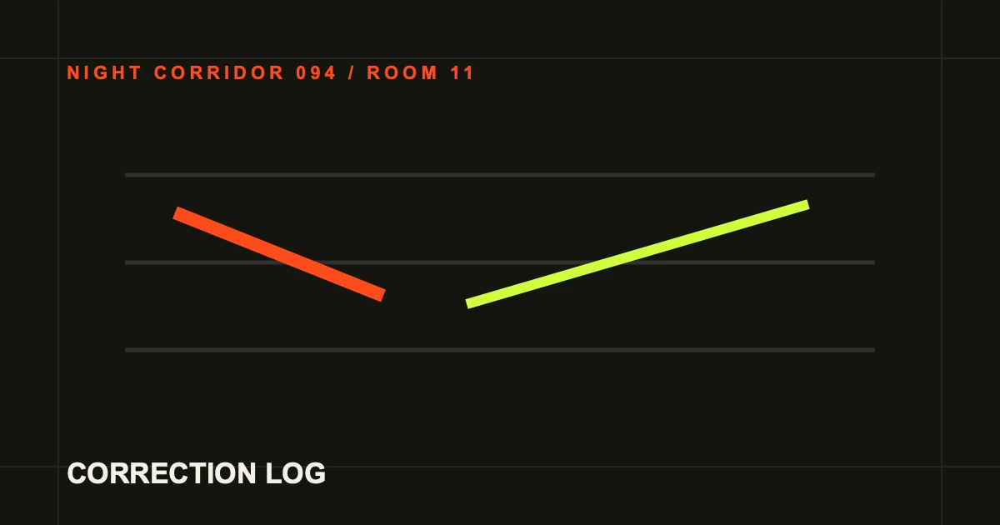

跳到主要内容
复核廊 / %%READ_TIME%%%%ARTICLE_TITLE%%
%%ARTICLE_ACCENT%%
%%ARTICLE_LEAD%%

%%COVER_CAPTION%%01SIGNAL / 可换字段%%SECTION_1_TITLE%%
%%SECTION_1_BODY%%
02RECORD / 可换字段%%SECTION_2_TITLE%%
%%SECTION_2_BODY%%
03BOUNDARY / 可换字段%%SECTION_3_TITLE%%
%%SECTION_3_BODY%%
04HANDOFF / 可换字段%%SECTION_4_TITLE%%
%%SECTION_4_BODY%%
%%FAQ_1_QUESTION%%
%%FAQ_1_ANSWER%%
%%FAQ_2_QUESTION%%
%%FAQ_2_ANSWER%%
打开全廊房门表 · 31 个完整页面